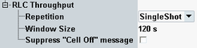

The "Measurement Control" parameters configure the scope of the measurement.
See also: "Statistical Settings"

Defines how often the measurement is repeated if it is not stopped explicitly or by a failed limit check.
- Continuous: The measurement is continued until it is explicitly terminated. The results are periodically updated.
- Single-Shot: The measurement is stopped after one statistics cycle.
Single-shot is preferable if only a single measurement result is required under fixed conditions, which is typical for remote-controlled measurements. Continuous mode is suitable for monitoring the evolution of the measurement results in time and observe how they depend on the measurement configuration, which is typically done in manual control. The reset/preset values therefore differ from each other.
Width of the result window displaying the throughput traces (X-axis range). The window size equals the duration of a single shot measurement (one statistics cycle). It is internally rounded down to the next integer multiple of the "Result Interval". As a consequence the number of results in the diagram equals the integer number <Window Size> / result interval of 240 ms.
Remote command:If you press ON | OFF while the "GSM Signaling" softkey is selected and the cell signal is on, a warning can be displayed. It asks you whether you really want to switch off the cell signal.
The checkbox enables/disables the warning.
No remote control is provided for this feature.